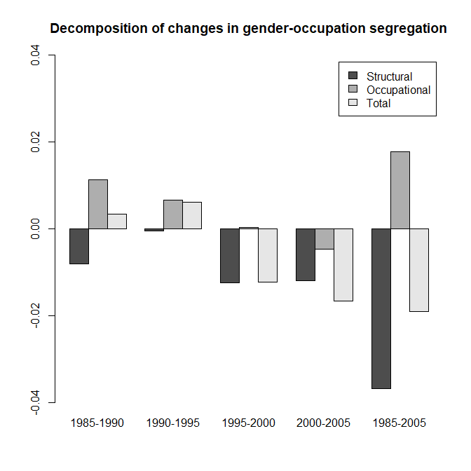

The task reproduces the main results of Uchikoshi and Mugiyama (2020) [UM2020] using the occupational crosswalk
developed above. The left panel of Figure 1 of UM2020 shows the dissimilarity index produced by their crosswalk for census years 1980
through 2005. The right panel shows the relative change with 1980 as the reference. The figure below shows the
corresponding graphs from this project's crosswalk covering 1985 to 2005. UM2020 uses a 0-100 dissimilarity scale;
in this task, I use a 0-1 scale. While the numberical output varies slightly,
probably due to small differences in crosswalks, the trends are close to identical.
Dissimilarity Index 1985-2005
The R code for the above figure is below.
#' ReproduceUMResults.R
#' Use data from UchikoshiMugiyamaRepro01.R in decomposition
#' following script in UMDissimilarity.R and functions in
#' dissimilarity_um.R
#' @references
#' [UM2020] Uchikoshi, Fumiya, Ryota Mugiyama. (2020) Trends in Occupational Sex Segregation in Japan:
#' A Decomposition Analysis of Census Data, 1980-2005.
#' Japanese Journal of Population Studies. 2020. 56. 9-23
#' [Elbers] Benjamin Elbers. 2021. A Method for Studying Differences in
#' Segregation Across Time and Space Sociological Methods & Research.
#' doi: 10.1177/0049124121986204
library(segregation)
library(data.table)
source("Scripts/dissimilarity_um.R")
# use 1985 occupation statistics with occupational crosswalk
# make data.table copy
d85 <- as.data.table(occgenall[occgenall$CensusYear == "1985",c("OccMinor","Gender","value")])
head(d85)
# start with Elbers dissimilarity function
segregation::dissimilarity(d85, "Gender","OccMinor", weight="value")
# stat est
# 1: D 0.5121397
# then with UM2020 dissimilarity
ggj.dissimilarity_all(d85, "Gender","OccMinor", weight="value")
# stat est
# 1: D 0.5121397
# do remaining years
d90 <- as.data.table(occgenall[occgenall$CensusYear == "1990",c("OccMinor","Gender","value")])
d95 <- as.data.table(occgenall[occgenall$CensusYear == "1995",c("OccMinor","Gender","value")])
d00 <- as.data.table(occgenall[occgenall$CensusYear == "2000",c("OccMinor","Gender","value")])
d05 <- as.data.table(occgenall[occgenall$CensusYear == "2005",c("OccMinor","Gender","value")])
# put in data table for plotting as in figure 1 of UM2020
di_um <- data.table( CensusYear = c(1985,1990,1995,2000,2005),
DI = c(ggj.dissimilarity_all(d85, "Gender","OccMinor", weight="value")[,"est"],
ggj.dissimilarity_all(d90, "Gender","OccMinor", weight="value")[,"est"],
ggj.dissimilarity_all(d95, "Gender","OccMinor", weight="value")[,"est"],
ggj.dissimilarity_all(d00, "Gender","OccMinor", weight="value")[,"est"],
ggj.dissimilarity_all(d05, "Gender","OccMinor", weight="value")[,"est"]) )
di_um$Change <- as.numeric(di_um$DI ) / as.numeric(di_um[1,2][[1]])
windows(11,5)
par(mfrow=c(1,2))
with(di_um, plot(CensusYear, DI, ylim=c(0,0.60), type="b",
main="Dissimilarity Index", ylab=""))
with(di_um, text(CensusYear, DI, labels=round(as.numeric(di_um$DI ),4),
pos=3,cex=0.7))
with(di_um, plot(CensusYear, Change, ylim=c(0.85,1.15), type="b",
main="Change versus 1985", ylab=""))
with(di_um, text(CensusYear, Change, labels=round(as.numeric(di_um$Change ),3),
pos=3,cex=0.7))
Decomposition of changes between censuses
The figure below corresponds to Figure 2 of UM2020 and shows the decomposition of
census-to-census changes into structural and occupational (marginal) components. The
decompositions 1990-1995, 1995-2000, and 2000-2005 are consistent with UM2020, with
larger structural changes for 1995-2000 and 2000-2005, and larger occupational changes
for 1990-1995. For 1985-1990, the total change seems to agree but the decomposition for
this task shows larger, but opposing, contributions for structure and occupations. This
may be an artifact of the crosswalk. As noted in the
task on creating the crosswalk,
occupational classifications for 1980 and 1985 were derived from the 2nd Revision of
the Japan Standard Occupational Classification while those for 1990 through 2005 were
derived from the 3rd Revision.

Decomposition of changes in gender-occupation segregation
Uchikoshi, Fumiya, Ryota Mugiyama. (2020) Trends in Occupational Sex Segregation in Japan:
A Decomposition Analysis of Census Data, 1980-2005.
Japanese Journal of Population Studies. 2020. 56. 9-23
https://doi.org/10.24454/jps.1901001